Corporate Landlords Are Reshaping Boston — Unevenly
Exploratory analysis of corporate ownership and owner occupancy across 21 Boston neighborhoods, 2004–2024.
Overall Questions
Before looking at the data, I read through the Homes for All MA report on COVID-era evictions and the New York Times article on 83 million eviction records. Both emphasize that who owns a property — corporate entity vs. resident landlord — shapes how tenants are treated, especially in crises. With that framing, I posed three questions targeting different angles of the dataset.
Question 1
Is there a structural tradeoff between corporate ownership and owner occupancy — and how strong is it across Boston's neighborhoods?
Motivation: The Homes for All MA report argues that live-in landlords file fewer evictions, implying owner-occupancy is a stabilizing force. If corporate ownership and owner occupancy are truly inverse forces, we should see a strong negative correlation between them across neighborhoods. This is the foundational check before any policy recommendation about promoting local ownership.
Question 2
Has corporate ownership grown faster in majority-white or majority-nonwhite neighborhoods — and what does this suggest about who bears the risk of displacement?
Motivation: The Homes for All MA report found that communities of color — particularly Black and Latinx residents — faced disproportionately high eviction rates. If corporate ownership has been growing fastest in neighborhoods with more residents of color, that would point to a compounding dynamic between financialization and racial displacement. I use the 2004–2024 window to test whether Boston fits this national pattern.
Question 3
Did the COVID-19 pandemic accelerate the pace of corporate acquisition — and which neighborhoods saw the sharpest post-pandemic inflection?
Motivation: The Homes for All MA report documents that corporate landlords continued filing evictions even during the moratorium. A related question is whether the pandemic also accelerated corporate entry into the housing market — consistent with national reporting on institutional investors exploiting pandemic-era disruption.
Phase 1: Data Overview & Quality
The dataset contains 441 records across 21 Boston neighborhoods, covering 2004–2024 (21 years × 21 neighborhoods). The two core time-varying fields are corp_own_rate and own_occ_rate. All demographic variables are static across years — they reflect a single Census snapshot joined to every year row. This means we cannot track how neighborhood demographics changed over the same 20-year window, only how ownership rates changed against a fixed demographic baseline.
Data quality notes:
Frozen demographics: Census-derived fields (population, race counts, housing units) are identical for every year within a neighborhood. Any demographic analysis here reflects the structure of the join, not real change over time.
No missing values were found in any of the 441 records across all 40 fields.
All 21 neighborhoods have exactly 21 records — one per year — confirming a balanced panel with no gaps.
Vacancy rates (vacant_unit / tot_unit) appear plausible (4–22%), with South Boston Waterfront and Downtown showing higher vacancy in 2024, likely reflecting new luxury construction with slow absorption.
441
Total records
21
Neighborhoods
21
Years (2004–2024)
0
Missing values
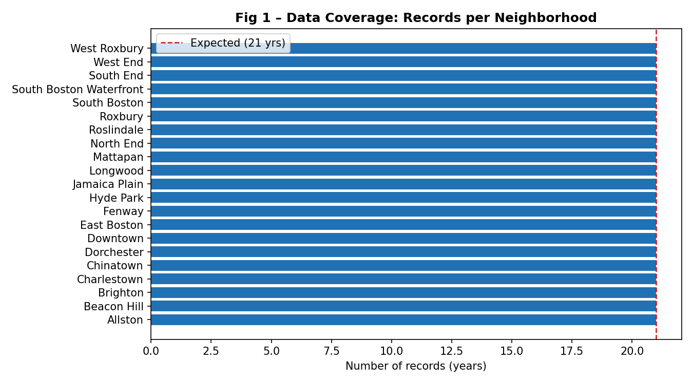
Figure 1 – Data Coverage: Records per Neighborhood
Every neighborhood has exactly 21 records — one per year — confirming a perfectly balanced panel. The red dashed line marks the expected count of 21. This means there is no attrition or selective reporting that could bias trend analysis.
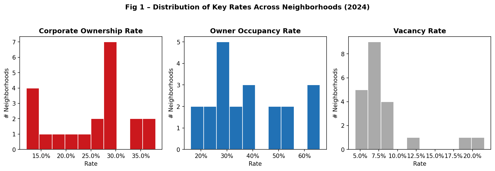
Figure 2 – Distribution of Key Rates Across Neighborhoods (2024)
Corporate ownership rates range from roughly 10% to 41%, right-skewed with most neighborhoods below 30%. Owner occupancy is more symmetric, centered around 35–45%. Vacancy rates are low and concentrated, with a few outliers above 15%. These distributions confirm that corporate expansion is not uniform — it varies substantially across neighborhoods, making neighborhood-level disaggregation essential.
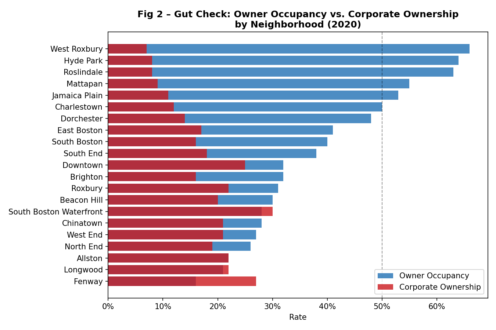
Figure 3 – Gut Check: Owner Occupancy vs. Corporate Ownership by Neighborhood (2020)
As a sanity check, we expect outer residential neighborhoods like West Roxbury, Hyde Park, and Roslindale to have the highest owner occupancy, and denser rental-heavy neighborhoods like Fenway, Allston, and Longwood to have the lowest. The 2020 snapshot confirms this exactly: West Roxbury leads at 66% owner occupancy and 7% corporate ownership, while Fenway sits at 16% owner occupancy and 27% corporate ownership. This alignment with expectations builds confidence in the dataset's validity.
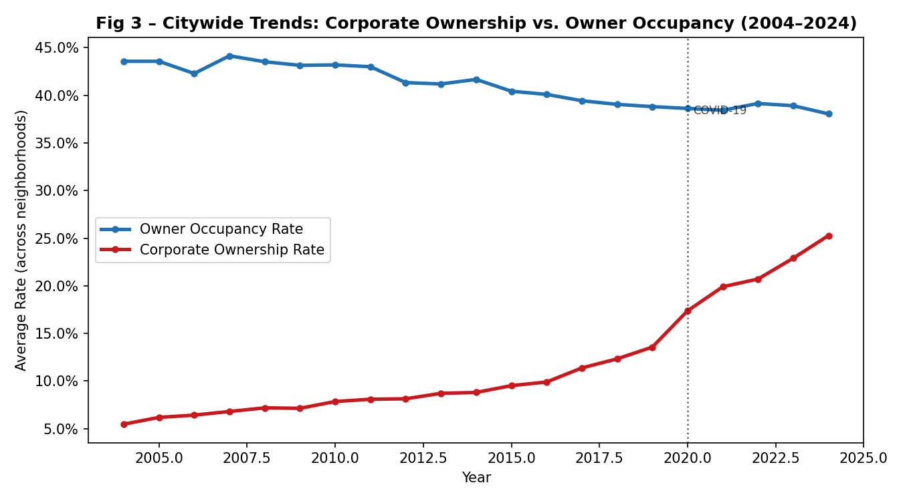
Figure 4 – Citywide Trends: Corporate Ownership vs. Owner Occupancy (2004–2024)
Averaged across all 21 neighborhoods, corporate ownership rose from 5.5% in 2004 to 25.3% in 2024 — a roughly 5× increase. Over the same period, average owner occupancy declined from 43.6% to 38.0%. The two trends move in opposite directions throughout, and the gap appears to widen after COVID-19 (marked with dotted line), which foreshadows the questions explored in Phase 2.
Question 1: The Structural Tradeoff Between Corporate & Owner Occupancy
The central premise of housing stability research is that corporate landlords and owner-occupants represent opposite ends of the landlord spectrum. I tested whether this tradeoff appears structurally across Boston's neighborhoods.
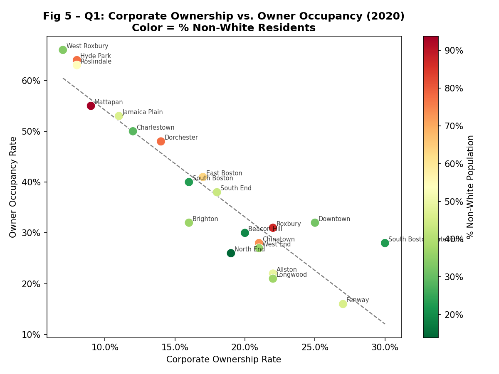
Figure 5 – Corporate Ownership vs. Owner Occupancy by Neighborhood (2020), colored by % non-white population
The relationship is strikingly inverse: the Pearson correlation between corporate ownership and owner occupancy across all 21 neighborhoods in 2020 is −0.91. Neighborhoods with more corporate landlords have systematically fewer owner-occupants. The color encoding adds a secondary pattern: neighborhoods with the lowest owner occupancy and highest corporate ownership tend to have higher shares of non-white residents (darker red), while West Roxbury anchors the opposite end — high occupancy, low corporate ownership, majority white.
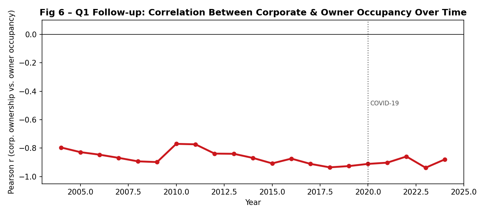
Figure 6 – The Corporate–Owner Occupancy Correlation Has Deepened Over Time (2004–2024)
Rather than a static relationship, the negative correlation between these two rates has strengthened over the full 20-year window, going from −0.80 in 2004 to −0.94 by 2023. This means that corporate-heavy neighborhoods are becoming more so, while owner-occupied neighborhoods are holding their character or losing ground more slowly. The COVID-19 onset (2020) does not visibly break the trend — the structural divergence was already well underway.
Question 2: Who Bears the Burden of Corporate Expansion?
Having established the structural tradeoff, the next question is whether corporate expansion has been spatially equitable — or whether it has concentrated in neighborhoods where residents of color are most present.
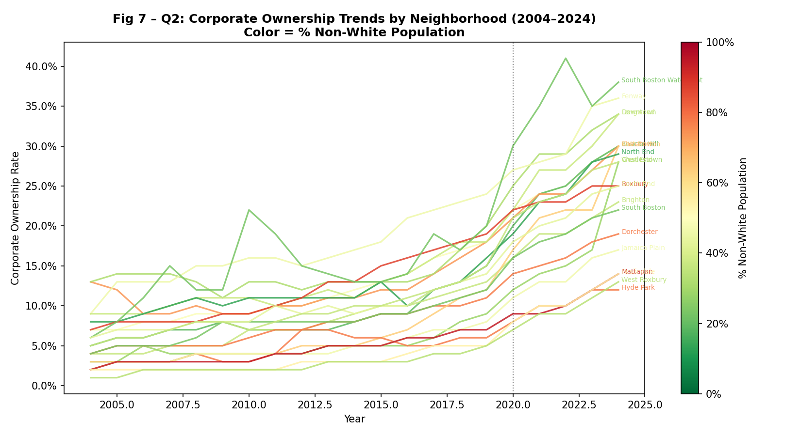
Figure 7 – Corporate Ownership Trends by Neighborhood (2004–2024), colored by % non-white population
Every neighborhood saw corporate ownership rise, but growth was far from uniform. Counter-intuitively, the neighborhoods with the steepest absolute increases — South Boston Waterfront, Fenway, Charlestown — are not the most non-white (shown in green/yellow on the color scale). Meanwhile, the most heavily non-white neighborhoods like Roxbury, Mattapan, and Dorchester started at lower baselines and saw more moderate absolute growth. This suggests corporate investment is currently tracking gentrification pressure more than pre-existing minority concentration.
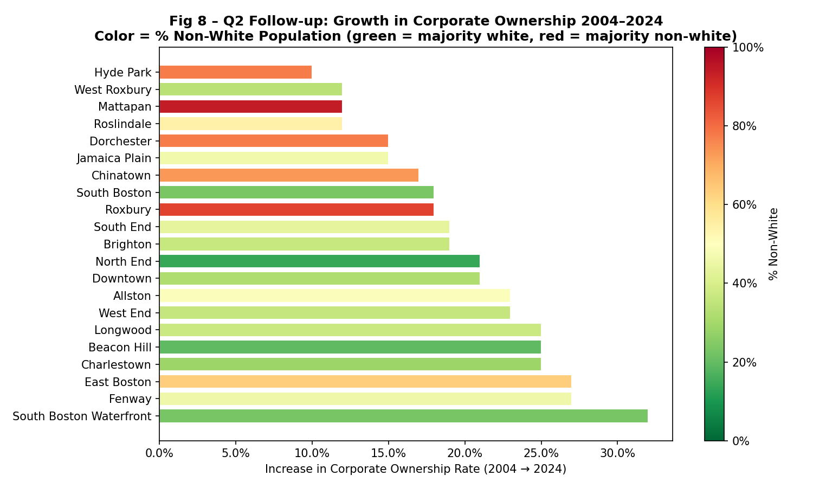
Figure 8 – Growth in Corporate Ownership 2004–2024 by Neighborhood, colored by % non-white population
South Boston Waterfront (+32 pp), Fenway (+27 pp), and East Boston (+27 pp) top the list. East Boston stands out: it is the only majority-nonwhite neighborhood (63% non-white, predominantly Latinx) in the top tier of corporate growth, raising particular concerns about displacement risk. The overall correlation between corporate growth and % non-white is −0.52, suggesting corporate investment currently prefers whiter, gentrifying neighborhoods — but this may shift as those markets become saturated and capital seeks lower-cost entry points in majority-nonwhite areas.
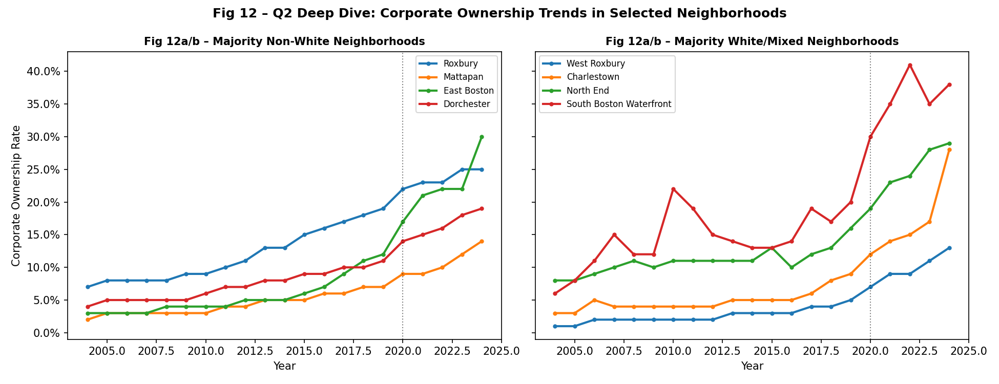
Figure 9 – Deep Dive: Corporate Ownership in Selected Neighborhoods, by Racial Composition
Comparing four majority-nonwhite neighborhoods (left) vs. four majority-white or mixed neighborhoods (right) reveals different trajectory shapes. Roxbury, Mattapan, Dorchester, and East Boston show steady, consistent growth throughout the period. In contrast, Charlestown and South Boston Waterfront show a visible post-2020 inflection with steeper acceleration after COVID. This suggests different mechanisms: long-run structural corporate interest in nonwhite neighborhoods vs. a more recent speculative wave in gentrifying areas.
Question 3: Did COVID-19 Accelerate Corporate Acquisition?
To test whether COVID accelerated corporate entry, I fit linear trends to each neighborhood's corporate ownership rate separately for the pre-COVID (2004–2019) and post-COVID (2020–2024) periods and compared the slopes.
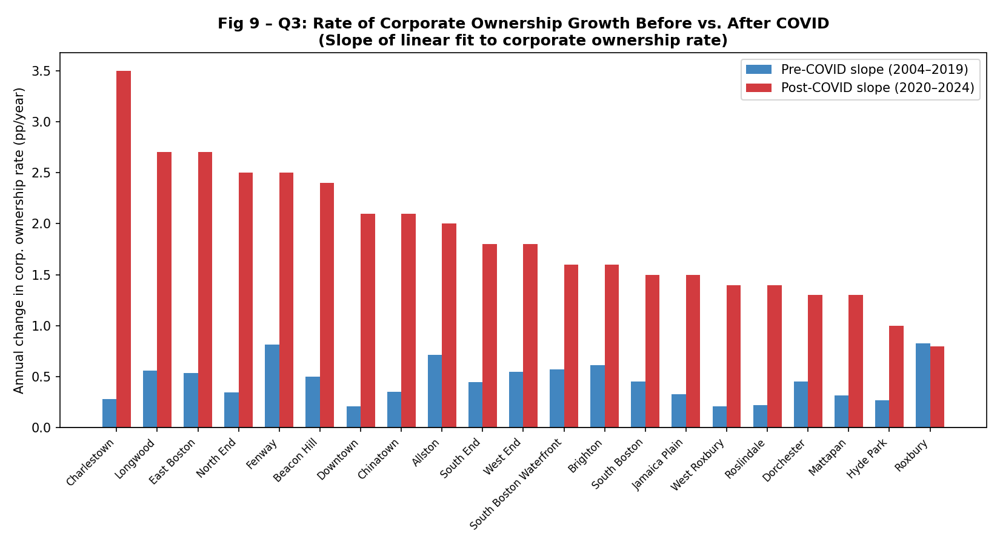
Figure 10 – Rate of Corporate Ownership Growth Before vs. After COVID (annual slope, pp/year)
Every single neighborhood in Boston experienced a higher rate of corporate acquisition after 2020 than before — without exception. Post-COVID slopes in Charlestown, Longwood, and East Boston exceed 2.5 percentage points per year. Even the slowest post-COVID growers (Roxbury, Hyde Park) outpaced their pre-pandemic rate. This universal acceleration is consistent with national reporting on institutional investors exploiting pandemic-era disruption to consolidate property holdings.
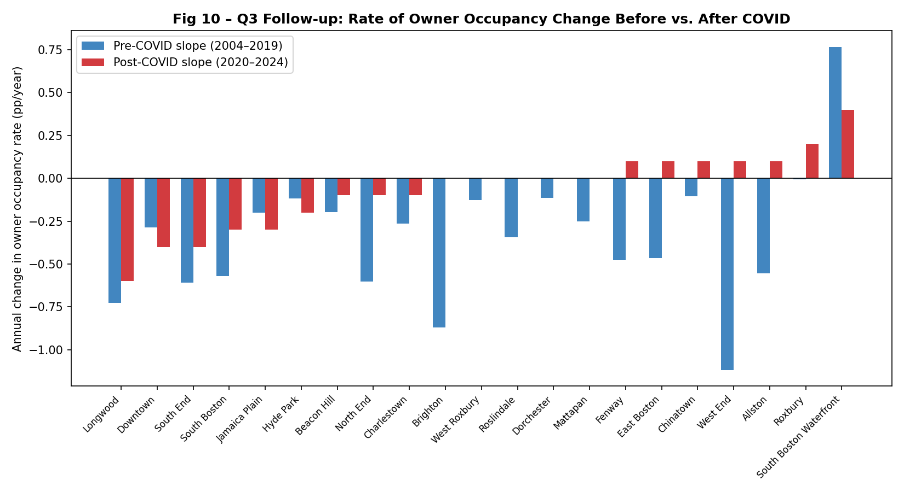
Figure 11 – Rate of Owner Occupancy Change Before vs. After COVID (annual slope, pp/year)
Before COVID, nearly all neighborhoods were already losing owner occupancy at a slow, steady rate. After 2020, the picture is more mixed: many neighborhoods have stabilized near zero slope, but several — Longwood, Downtown, South End — continue declining. Crucially, no neighborhood shows a meaningful post-COVID recovery in owner occupancy. Once owner-occupants leave, they are not returning. This data does not support a "temporary displacement" narrative.
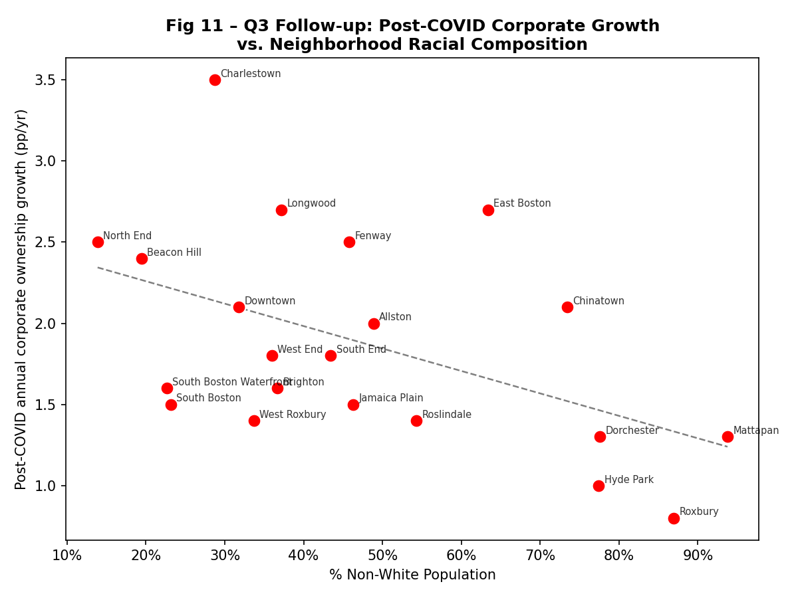
Figure 12 – Post-COVID Corporate Growth Rate vs. Neighborhood Racial Composition
Plotting post-COVID corporate ownership growth rate against each neighborhood's % non-white residents shows a negative relationship: whiter neighborhoods experienced faster corporate acquisition after 2020. East Boston is a clear outlier — majority Latinx yet one of the highest post-COVID growth rates, reflecting its ongoing gentrification. Roxbury and Mattapan, both over 85% non-white, sit at the bottom of the post-COVID growth chart. This may reflect lower property values as a temporary barrier rather than protection from eventual corporate interest.
Summary
Three core findings emerge from this analysis. First, corporate ownership and owner occupancy are in near-perfect structural opposition: the cross-neighborhood correlation has grown from −0.80 in 2004 to −0.94 in 2023, confirming the mechanistic premise behind policies that promote local ownership as a tenant-stability strategy.
Second, the geography of corporate expansion does not simply track racial composition. The neighborhoods with the largest absolute corporate growth over 2004–2024 — South Boston Waterfront, Fenway, Charlestown — skew whiter and are in active gentrification. The most non-white neighborhoods (Roxbury, Mattapan, Hyde Park) have seen corporate ownership roughly triple but from lower baselines. East Boston is the most important exception: a majority-Latinx neighborhood with rapid corporate acquisition, making it a high-displacement-risk case to watch.
Third, COVID-19 was a universal accelerant. Without exception, every neighborhood saw a higher rate of corporate acquisition in 2020–2024 than in any comparable pre-pandemic window. The window for policy intervention — before corporate ownership reaches levels that structurally foreclose owner-occupancy — appears to be narrowing rapidly, especially in mid-range neighborhoods like East Boston, Brighton, and Jamaica Plain.
Key limitation: Demographic fields are frozen at a single Census snapshot, so we cannot observe how racial composition changed alongside ownership structure. Future work linking these trends to eviction filing data would substantially strengthen the causal story.